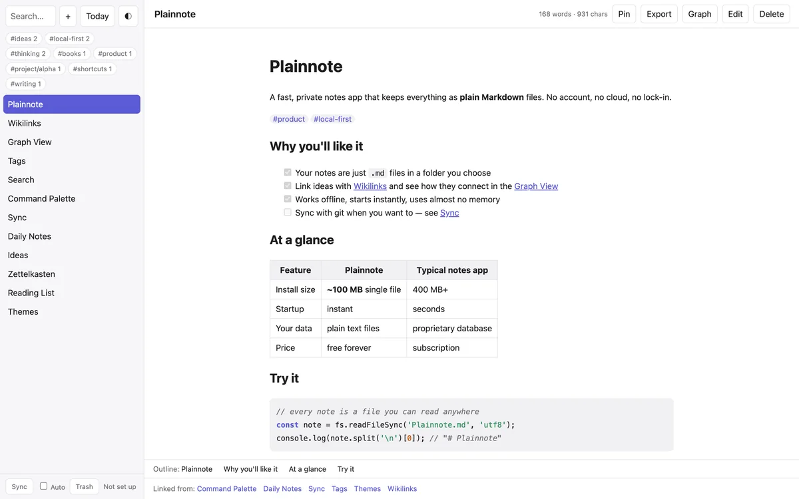
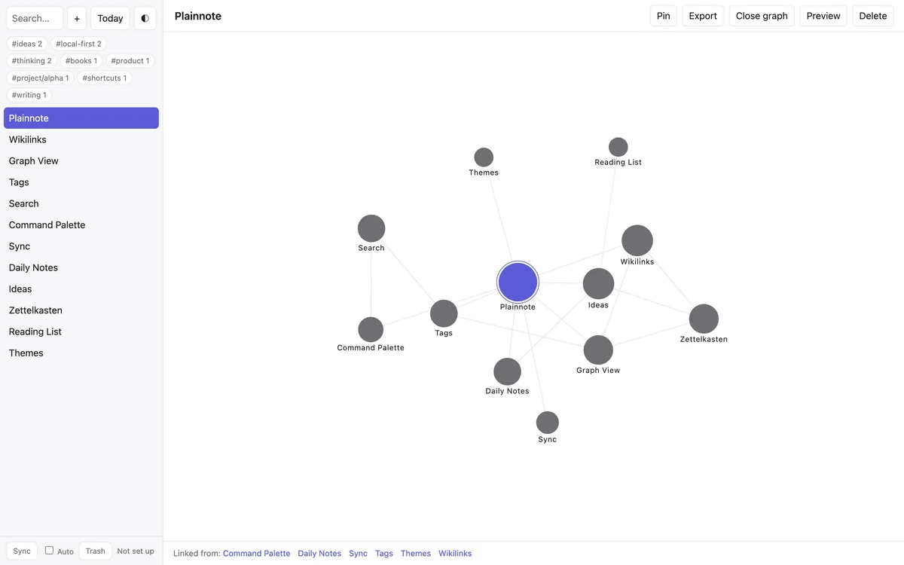
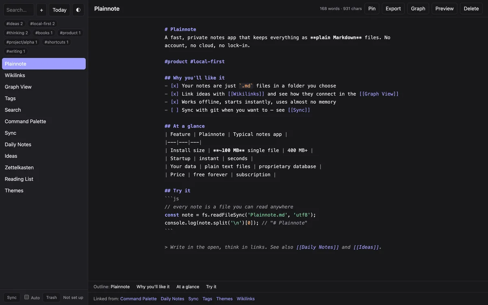

Zyvor · source-available
Plainnote
Notes that feel instant. Files you own.
Plain Markdown in a folder you choose. A local-first notes app. Every note is a Markdown file in a folder you choose, with wikilinks, a live graph and dark mode. No account, no cloud, no telemetry, no dependencies: just Node.js.
Plainnote-0.13.1-universal.dmg · macOS · See current prices · All downloads
Verified by Apple: Developer ID signed and notarized. This applies to the macOS DMG. The Windows and Linux executables are not notarized.
- macOS app needs Node.js 20 or later installed. Windows and Linux executables are on the release page.

Notes you own, in plain files you can open anywhere.
Keep your notes in your own files
Every note is a Markdown file in a folder you choose. Use an existing Obsidian vault or any folder of .md files.
See how your ideas connect
Type [[ to link a note. Backlinks appear under every note, and a live graph lets you click through them.
Keep your notes private
No account, no telemetry. The local server accepts only local connections, and deletes go to a trash folder you can restore from.
Your notes are just files. Keep it that way.
Plainnote reads and writes plain Markdown in a folder you choose. Point it at an existing Obsidian vault or any folder of .md files, and anything that reads Markdown can open your notes.
Features
Graph view
See how your ideas connect.
Type [[ to link any note. Backlinks appear under every note, and the graph lets you drag, pan, zoom and click through your notes. Renaming a note updates the links to it.
Features in the README
Writing
A calm place to think.
Live syntax highlighting while you edit, a slash menu for headings, tasks, tables and code, a command palette and autosave. If a note changes on disk underneath you, your version is saved as a conflict copy instead of overwriting.
Shortcuts
And the rest of the toolbox.
Wikilinks and tags
[[Note]], [[Note|alias]], [[Note#Heading]] and [[Note^block]] links with autocomplete, plus #tag and #parent/child tags.
Search
Full-text search with snippets, a quick switcher, and sidebar queries such as tag:idea, path:work/ and /regex/.
Tabs and split pane
Open notes in tabs, or keep a second note beside the one you are editing as a live read-only preview.
Properties and templates
Edit a note's frontmatter without touching the rest of the file, and start notes from templates with {{date}} and {{title}}.
Git sync
Sync with your own git remote, manually or every 2 minutes. Prefer iCloud, Dropbox or Syncthing? Point Plainnote at a folder inside one.
Light, dark and your own CSS
Follow the system or pick a theme, set an accent colour, and drop CSS snippets into your notes folder.
Local by design.
No account, no telemetry
Notes stay in your folder. The app has no accounts and sends no telemetry.
Local-only server
It listens on 127.0.0.1 only, rejects other Host and Origin values, and confines note paths to your notes folder.
Safe by default
Deletes go to .trash/ and can be restored. Remote mode, for phones, needs a secret token on every request.
Prices and licenses
Current prices are on zyvor.dev. You can ask for a 30-day trial before you decide.
Specs and requirements.
- Licence
- Zyvor Production Licence v2.0A 30-day trial is available on request from sales@zyvor.dev; production and any other use needs a paid Order.
- Dependencies
- NoneNo npm install and no build step.
- Runtime
- Node.js 20 or laterNeeded to run from source. The macOS app needs Node.js installed; the Windows and Linux executables do not.
- macOS
- Signed and notarized DMGThe release DMG is signed with Developer ID, notarized and stapled.
- Windows and Linux
- Single executablesBuilt by CI; not tested by hand on those systems. The Windows executable is unsigned, so SmartScreen may warn.
- iPhone and iPad
- Source buildA native app in the repository, built with Xcode. App Store submission is not included.
Honest limits
The editor is a plain textarea, not a full code editor. The graph layout is O(n²), fine for a few hundred notes. There is no encryption at rest and no built-in authentication outside remote mode: it relies on being local-only. Live Preview is a beta.
Get started in three steps.
Download
Get the macOS
.dmg, the Windows.exeor the Linux binary from the latest release, or clone the repository.Pick a folder
Point Plainnote at an existing folder of Markdown files or an Obsidian vault. The default is
~/Notes.Write
Press Cmd/Ctrl+K to jump or create a note, Cmd/Ctrl+Shift+P for every command.
Run from source (Node.js 20+)
git clone https://github.com/zyvorai/note
cd note
node server.js ~/Notes # then open http://localhost:4777Support the project
Plainnote is source-available under the Zyvor Production Licence v2.0. A 30-day trial is available on request from sales@zyvor.dev (a paid evaluation Order at no charge); production and any other use needs a paid Order (pricing, sales@zyvor.dev). If it helps you, you can give any amount you like, from INR 1 up. Suggested: INR 999 (about US$10), INR 2,999 (about US$30) or INR 9,999 (about US$100), by UPI, card or netbanking. Razorpay accepts international cards.
A donation is voluntary and supports development and maintenance. It is not a purchase: it buys no support, SLA, features, priority or licence.
Questions, answered.
Do I need a license?
For production use, yes. Plainnote is source-available under the Zyvor Production Licence v2.0. A 30-day trial is available on request from sales@zyvor.dev (a paid evaluation Order at no charge); production and any other use needs a paid Order (pricing, sales@zyvor.dev). You can also give any amount you like, but nothing is required and a donation buys nothing.
Where are my notes stored?
As plain .md files in a folder you choose, with subfolders as folders. Anything that reads Markdown can open them.
Can I use my Obsidian vault?
Yes. Point Plainnote at an existing vault or any folder of Markdown files.
How do I sync between devices?
With git (a built-in Sync button, manual or every 2 minutes), or by putting your notes folder in iCloud Drive, Dropbox or Syncthing. For a phone browser, run the server in remote mode behind HTTPS.
Does it need an account or send data anywhere?
No account and no telemetry. The server listens on localhost only unless you start remote mode.
Which platforms are supported?
macOS (signed, notarized DMG), Windows and Linux (single executables built by CI, not tested by hand), and a native iPhone and iPad app built from the repository.